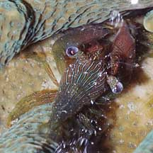
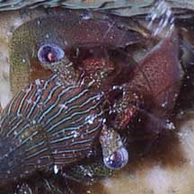
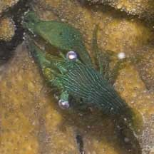
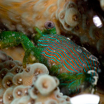

|
|
| shrimps text index | photo index |
| Phylum Arthropoda
> Subphylum Crustacea > Class
Malacostraca > Order Decapoda
> prawns and shrimps > Family Palaemonidae |
| Machine
gun coral shrimp Coralliocaris graminea Family Palaemonidae updated Jan 2020 Where seen? This fat little green shrimp is sometimes living among branching corals such as Acropora corals (Acropora sp.) and Montipora corals (Montipora sp.). It is usually well hidden and hard to spot and photograph. Features: About 1cm long. Body is short and fat, with a bent back. Large eyes wide apart. Usually dark green with fine stripes of white, black, red and blue. Double snap: It has a pair of huge flattened pincers that can be larger than its body. Like the snapping shrimps (Family Alpheidae), the pincer has an enlarged tooth and a special catch. When the catch is released, the tooth makes a loud snapping sound. Unlike the snapping shrimp which only has one such 'snapping' pincer, the Machine gun shrimp has two such pincers, hence its common name. But the 'snaps' of the Machine gun shrimp is not as powerful as those of the snapping shrimps. The shrimps probably use their snapping pincers to protect their home from animals that might damage the coral. They are not believed to eat their host and simply use the coral as shelter. Usually, a pair is seen in a single coral colony. |
 Cyrene Reef, Aug 10 |
 |
 Pulau Hantu, Jan 11 |
| Machine gun coral shrimps on Singapore shores |
On wildsingapore
flickr
|
| Other sightings on Singapore shores |
 Sentosa Serapong, May 12 Photo shared by Marcus Ng on flickr. |


|
Links
References
|